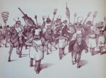
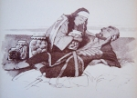

(1 votes, average: 5.00 out of 5)
(1 votes, average: 5.00 out of 5)
Archive for January, 2009
(1 votes, average: 5.00 out of 5)
(1 votes, average: 5.00 out of 5)
27
01
2009
International Holocaust Remembrance DayPosted by: pezza pan in Blog, Human nature, Human rights, Multimedia27th January, 1945: the day when russian troops liberated Auschwitz. “War & Remembrance”, Episode XI: “Auschwitz”
 (No Ratings Yet) (No Ratings Yet)“Marjoe Gortner was the first Evangelical preacher to blow the whistle on his profession. In his documentary film, Marjoe, he revealed age-old tricks of the trade and exposed some of the entertainment aspects of the popular movement that have made it big business. If he lives forever, Hugh Marjoe Ross Gortner will most likely always be “The World’s Youngest Ordained Minister.” Born January 14, 1944, Marjoe was almost strangled during delivery by his own umbilical cord. The obstetrician told his mother that it was a miracle the child survived, and thus “Marjoe” — for Mary and Joseph — the Miracle Child, took his place at the end of a long line of Evangelical ministers. He had been a Bible Belt star most of his life. His parents, both itinerant evangelists themselves, noticed his gift for mimicry and his phenomenal powers of recall when he was 3. They set out to transform him into a preaching sensation, a “miracle child.” From the beginning, his preaching skills were meticulously cultivated. Before he learned to say “Mamma” or “Poppa,” he was taught to sing “Hallelujah!” When he was nine months old his mother taught him the right way to shout “Glory!” into the microphone. At three, he could preach the gospel from memory, and he received drama coaching and instruction in every performing art from saxophone playing to baton twirling. He was taught lengthy sermons, complete with gestures and lunges, and was ordained at the age of 4. They kicked off his career in 1949 by having him perform a marriage while a Paramount newsreel camera rolled. That got him into Ripley’s Believe It or Not as the “World’s Youngest Minister.” Marjoe and his parents toured the country for eight more years, raking in offerings from eager crowds, some $3 million by his own reckoning. Receiving his sermons from heaven, delivering souls, healing the sick, he seemed like God’s little angel, or — as his father put it ingenuously — “a preaching machine.” After a time, the act broke down. Marjoe’s father absconded with the money, the prepubescent boy was too old to be a novelty anymore, and his rage surfaced. He left his mother and lived off the kindness of nonreligious strangers in California for the duration of his adolescence. Then he found himself drawn back to the flame — the spotlight, the adulation, and of course the cash — of the evangelical circuit. His audiences never knew that his belief in God was nil, and the host preachers had no idea that he had, in his other life, joined with legions of hippies.” “I don’t have any power,” he once stated, “And neither do any of these other guys. Hundreds of people were healed at my crusades, but I know damn well it was nothing I was doing.” “Marjoe” is a documentary film produced in 1972 and directed by Howard Smith and Sarah Kernochan. Under the pretense of making a documentary detailing a viable ministry, Marjoe assembled a documentary film crew to follow him around revival meetings in California, Texas, and Michigan during 1971. Unbeknownst to everyone else involved — including, at one point, his father — Marjoe gave “backstage” interviews to the filmmakers in between sermons and revivals, explaining intimate details of how he and other ministers operated. After sermons, the filmmakers were invited back to Marjoe’s hotel room to tape him counting the money he collected during the day. The film won an Academy Award for Best Documentary Feature.
(2 votes, average: 5.00 out of 5) (3 votes, average: 3.00 out of 5) (1 votes, average: 1.00 out of 5) (No Ratings Yet) (3 votes, average: 3.00 out of 5) (1 votes, average: 1.00 out of 5)
(1 votes, average: 1.00 out of 5)
(2 votes, average: 5.00 out of 5)Beirut: Nantes (No Ratings Yet)Newspaper description of 36th episode of the series “Luz Maria”: “Modesty says to Alvaro that, according to the letter, Lucecita does not know that Gustavo is also there. He feels relieved. Then she goes to Emilio to tell him that she is going to debunk Angelina. She goes to Miguel to ask him to raise Mirta’s salary. He is becoming harsh to her and she, as usual, plays a martyr. Vain and stubborn, she complains to be ignored, and blames Lucecita for it. Miguel defends her. Angelina becomes jealous, but at the end she gets at least the raise of Mirta’s salary. Not knowing who the owner is, Lucecita goes to the ranch for work. She is recieved by Pedro’s wife Charo who tells her that the boss will come soon, so she will be able to meet him. Lucecita is nervous. Alvaro says to Angelina that he already knows the truth about her alleged handicap and tries to convince her to bring out the truth, but she is stubborn and follows her plan.” (No Ratings Yet)
(2 votes, average: 5.00 out of 5)Illustrations from a cookbook published in Yugoslavia in 1985, before the war. Illustrations were drawn by Dussan Petriccich. Compare with originals:   (1 votes, average: 5.00 out of 5)The author about himself: “I was born in the foothills of the San Gabriel Mountains in Southern California and enjoyed an exciting childhood full of poetry and pioniria among the snakes, rats and tarantulas of that enchanted realm. I eventually grew into an inquisitive bearlike man who has had three exciting careers: garbage collector, merry-go-round-operator and cartoonist. Some of my work is collected in THE BOOK OF JIM, THE FRANK BOOK and SEEING THINGS (all published by Fantagraphics) and in various toys, fabrics, prints and urban legends. Thank you for your interest.” Many thanks to Kiklop for revealing me the work of this man.
(No Ratings Yet)
 (1 votes, average: 5.00 out of 5)
(1 votes, average: 5.00 out of 5)
 (3 votes, average: 2.67 out of 5) (3 votes, average: 2.67 out of 5)Pionir 10: Da, da, da (No Ratings Yet)
(2 votes, average: 4.50 out of 5)
(3 votes, average: 5.00 out of 5)Happy happy happy
(No Ratings Yet) |
|
Powered by WordPress, Mandigo theme by tom.
 Entries (RSS)
and Comments (RSS).
Entries (RSS)
and Comments (RSS).


{kind=link}
{kind=link}
{kind=link}
{kind=link}
{kind=link}
{kind=link}
{kind=link}
{kind=link}
{kind=link}
{kind=link}
{kind=link}